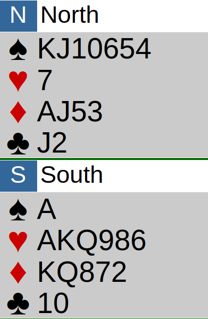
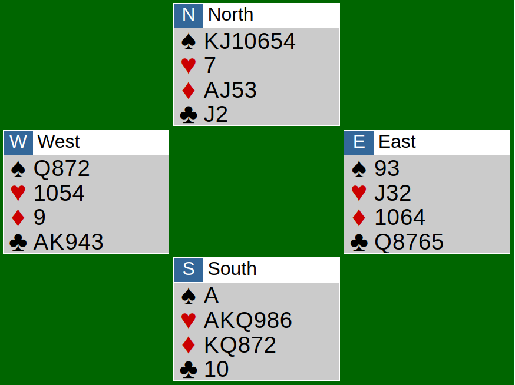

Bridgelitteraturen har en egen sjanger, humorbøkene, hvor følgende tema stadig vekk går igjen. En (kanskje ikke så altfor begavet) klubbspiller havner i en merkelig auksjon, sitter igjen med en kontrakt som ser ut til å være ganske så håpløs, og skal også få gleden av å styre spilleføringen.
Der sitter man og tenker mest på hvordan man skal unngå at det blir altfor mange bet så man ikke taper ansikt fullstendig. Spillefører klarer så på mirakuløst vis å få kontrakten (gjerne en slem) til å stå. Han nærmest snubler og idiotspiller seg til mål, de andre spillerne, og bakspillerne i publikum, kan egentlig bare måpe over hva som akkurat har skjedd. Ekspertene i klubben snøfter med avsky.
Jeg tror jeg forstår litt bedre hvordan det må være for disse karakterene nå.
Auksjonen sitter litt vagt i minnet (kanskje jeg forsøker å glemme den), men Øst passet som giver, jeg åpnet i hjerter, Vest meldte inn i kløver, makker foretrakk spar. Jeg liker hånden min, og at makker tydeligvis har noen verdier å komme med, men spar er ikke noen aktuell kontrakt i min verden.
Øst våkner opp for å støtte sin makker og jeg hopper i ruter. Dette ble startskuddet til en meldekrig hvor jeg er usikker på om det egentlig er motstanderne eller makker jeg kjemper mot, for makker liker nemlig spar! Dette kan bare ikke ende godt. Jeg insisterer på hjerter, makker foretrekker 6 ruter, som blir doblet. Doblingen skremmer meg til å prøve 6 hjerter, som selvfølgelig også blir doblet. Herregud, hva har jeg gjort nå?
Vest spiller ut kløveress og kongen til trumf, og jeg kjenner på kvalmen når jeg ser en tett ruter og en hjertertaper. Jeg topper hjerteren i selvforakt, og...
Holder på å daue av latter ved bridgebordet, faller av stolen, og er sjeleglad for at fargen sitter jevnt i 36% av tilfellene.